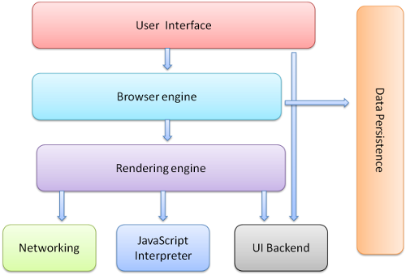
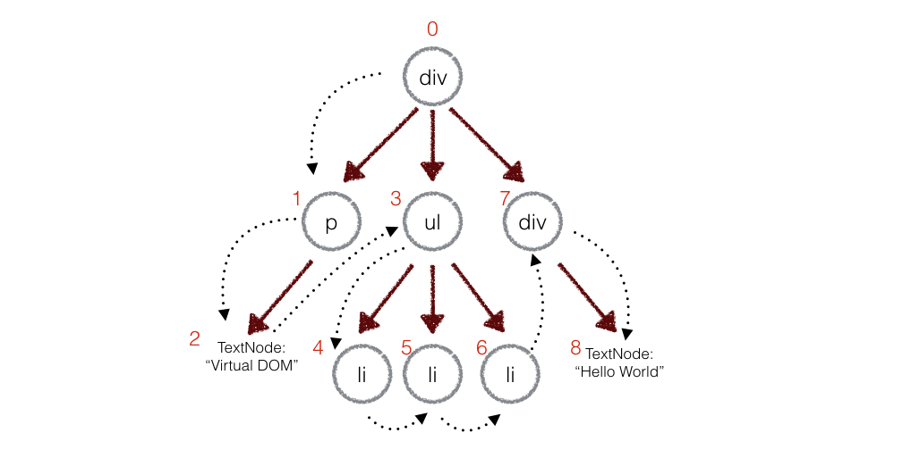

Web可视化分析开发
-
什么是可视化分析
-
web可视化分析系统基本开发技术
-
开发自己的可视化分析系统
信息可视化
-
信息可视化的概念
对抽象数据使用计算机支持的、交互的、可视化的表示形式以增强认知能力。
-
信息可视化与传统图形学的对比
与传统计算机图形学以及科学可视化研究不同,信息可视化的研究重点更加侧重于通过可视化图形呈现数据中隐含的信息和规律,所研究的创新性可视化表征旨在建立符合人的认知规律的心理映像(mental image).经过20余年的发展,信息可视化已经成为人们分析复杂问题的强有力工具。
人机交互
-
人机交互的概念
人与系统之间通过某种对话语言,在一定的交互方式和技术支持下的信息交换过程。
-
人机交互的两个方面
人机交互的发展一方面 强调研究智能化的用户界面,将计算机系统变成一个有思想、有个性、有观点的智能机器人;另一方面强调充分利用计算机系统和人各自的优势,弥补彼此的不足,共同协作来分析和解决问题.具体而言,主要研究方向包括符合认知科学的用户界面范型、交互方式以及相应的交互技术等,例如多通道用户界面及自然交互技术、可 触摸用户界面及手势交互技术、智能自适应用户界面及情境感知交互技术等.
可视化分析
-
可视化分析的概念
可视分析(visual analytics)是科学/信息可视化、人机交互、认知科学、数据挖掘、信息论、决策理论等研究领域的交叉融合所产生的新的研究方向，是一种通过交互式可视化界面来辅助用户对大规模复杂数据集进行分析推理的科学与技术
-
可视化分析的发展
自2006年起,可视化领域国际顶级会议IEEE VisWeek开始每年 举办“可视分析科学与技术”会议(IEEE Conf. on Visual Analytics Science and Technology,简称 IEEE VAST).可视 分析不再是一个交叉研究的新术语,而成为一个独立的研究分支.可视分析概念提出时拟定的目标之一即是面向大规模、动态、模糊、或者常常不一致的数据集来进行分析,因此可视分析的研究重点与大数据分析的需求相一致.近年来,可视分析研究很大程度上也围绕着大数据的热点领域,例如互联网、社会网络、城市交通、 商业智能、气象变化、安全反恐、经济与金融等.
信息可视化技术
网络(图)可视化
基于层次聚类与多尺度交互的大规模图可视化
信息可视化技术
时空数据可视化
模拟春节人口迁徙的可视化
Web的诞生
1991年8月6日，Tim Berners Lee在alt.hypertext新闻组贴出了一份关于World Wide Web的简单摘要，标志了Web页面在Internet上的首次登场。最早Web主要被一帮科学家们用来共享和传递信息，全世界的Web服务器也就几十台。真正使得Web开始流行起来的是Mosaic浏览器，这便是曾经大名鼎鼎的Netscape Navigator的前身。Berners Lee在1993年建立了万维网联盟（World Wide Web Consortium，W3C），负责Web相关标准的制定。浏览器的普及和W3C的推动，使得Web上可以访问的资源逐渐丰富起来。这个时候Web的主要功能就是浏览器向服务器请求。95年的时候马云在美国看到了互联网，更准确的说他其实看到的就是Web，阿里早先做的黄页也就是把企业信息通过进行HTML展示的Web应用。静态HTML信息。

动态内容的出现：CGI
1993年CGI（Common Gateway Interface）出现了，Web上的动态信息服务开始蓬勃兴起。CGI定义了Web服务器与外部应用程序之间的通信接口标准，因此Web服务器可以通过CGI执行外部程序，让外部程序根据Web请求内容生成动态的内容。Perl因为跨操作系统和易于修改的特性成为CGI的主要编写语言。当然，CGI可以用任何支持标准输入输出和环境变量的语言编写，比如Shell脚本,C/C++语言，只要符合接口标准即可。比如你用C语言编写CGI程序，你把希望返回的HTML内容通过printf输出就可以发送给Web服务器，进而返回给用户。
Web编程脚本语言：PHP/ASP/JSP
于是1994年的时候，PHP诞生了，PHP可以把程序（动态内容）嵌入到HTML（模版）中去执行，不仅能更好的组织Web应用的内容，而且执行效率比CGI还更高。之后96年出现的ASP和98年出现的JSP本质上也都可以看成是一种支持某种脚本语言编程（分别是VB和Java）的模版引擎。
分布式企业计算平台：J2EE/.Net
Web开始广泛用于构建大型应用时，在分布式、安全性、事务性等方面的要求催生了J2EE(现在已更名为Java EE)平台在1999年的诞生，从那时开始为企业应用提供支撑平台的各种应用服务器也开始大行其道。J2EE、.Net两大平台在相互竞争和模仿中不断向前发展。

框架横飞的年代：MVC
虽然脚本语言大大提高了应用开发效率，但是试想一个复杂的大型Web应用，访问各种功能的URL地址纷繁复杂，涉及到的Web页面多种多样，同时还管理着大量的后台数据，因此我们需要在架构层面上解决维护性和扩展性等问题。这个时候，MVC的概念被引入到Web开发中来了。MVC是一种典型的关注点分离的思想，不仅使得代码复用性和组织性更好，使得Web应用的配置性和灵活性更好。

浏览器端的魔术：AJAX
我们知道Web应用中用户提交表单时就向Web服务器发送一个请求，服务器接收并处理传来的表单，并返回一个新的网页。而前后两个页面中的往往大部分HTML代码是一样的，每次都返回整个页面内容是一种带宽资源的浪费。AJAX的出现可以使网页实现异步更新，通过在后台与服务器进行少量数据交换，这意味着可以在不重新加载整个网页的情况下，对网页的某部分进行更新。

前端MVC：Angular
随着业务功能的愈发复杂（看看现在的Gmail），这种模式本质上和JSP时代的Web开发并无本质区别，只不过是将复杂的业务逻辑从JSP文件转移到了JavaScript文件中而已。现在，对于一个前端功能、交互复杂的系统，JavaScript代码很容易膨胀（超过10万行）。很自然地，像服务端从JSP向MVC框架转换的过程一样，前端开发也出现了大量的MVC框架，比较典型的包括BackboneJS, AngularJS。总的来说，MVC框架的提出是为了解决前端开发的复杂度，提供一套规则组织代码、分层（MVC），通过合理的组织和分层，前端的代码职责明确、清晰，便于开发与测试。
JavaScript在服务器端的逆袭：Node
各大浏览器的竞争，使其引擎的性能不断提升，至今Google V8引擎的性能已经足以运行大型Javascript程序。在V8之上加以网络、文件系统等内置模块，形成了如今的Node.js。随着Node.js的出现，JavaScript开始拥有在服务端运行的能力，它的异步本质使得Node.js在处理I/O密集型业务中优势凸显，而大多Web业务中I/O性能都是瓶颈。eBay、Yahoo纷纷引入Node.js以提升性能。

web可视化分析系统开发用到的技术
编程技术
后端语言：PHP、Python、Java、.Net、C++等一种或多种。
后端框架：Laveral、Django、Spring等一种或多种。
前端技术
前端语言：HTML、CSS、Javascript、Canvas、SVG等。
前端语言：Bootstrap、Jquery、Angularjs等一种或多种。
数据库设计
数据处理
视觉设计
好脾气.....
基于Snap.svg与虚拟DOM的可视化库开发理论
-
Why
为什么要开发一套可视化库
-
What
什么是可视化库的本质
-
How
如何去开发自己的可视化库
为什么开发可视化分析库
-
应用型
举例：Echart、Highcharts
优点：几乎不需要写绘图过程代码就能生成漂亮的图表
缺点：定制型差，有时很难开发出属于符合项目逻辑的可视化分效果
-
基础型
举例：D3、Protovis
优点：功能强大，可以提供大量线性图和条形图之外的复杂图表样式
缺点：涉及大量的DOM操作，当DOM操作过多时就会影响程序性能。
浏览器基本原理

- 用户界面 - 包括地址栏、前进/后退按钮、书签菜单等。除了浏览器主窗口显示的您请求的页面外，其他显示的各个部分都属于用户界面。
- 浏览器引擎 - 在用户界面和呈现引擎之间传送指令。
- Render引擎 - 负责显示请求的内容。如果请求的内容是 HTML，它就负责解析 HTML 和 CSS 内容，并将解析后的内容显示在屏幕上。
- 网络模块 - 用于网络调用，比如 HTTP 请求。其接口与平台无关，并为所有平台提供底层实现。
- 用户界面后端 - 用于绘制基本的窗口小部件，比如组合框和窗口。其公开了与平台无关的通用接口，而在底层使用操作系统的用户界面方法。
- JavaScript 解释器。用于解析和执行 JavaScript 代码。
- 数据存储。这是持久层。浏览器需要在硬盘上保存各种数据，例如 Cookie。新的 HTML 规范 (HTML5) 定义了“网络数据库”，这是一个完整（但是轻便）的浏览器内数据库。
浏览器基本原理


DOM树生成
DOM与标记之间几乎是一一对应的关系。比如下面这段标记：
可翻译成如下的DOM树：

Style 规则树
WebKit CSS 解析器

Render树的构建
DOM和style规则树的组合

Render树是和 DOM 元素相对应的，但并非一一对应。非可视化的 DOM 元素不会插入呈现树中，例如“head”元素。如果元素的 display 属性值为“none”，那么也不会显示在呈现树中（但是 visibility 属性值为“hidden”的元素仍会显示）。
Layout与Painting
Layout阶段
Render器在创建完成并添加到Render树时，并不包含位置和大小信息。计算这些值的过程称为布局或重排。
Painting阶段
在绘制阶段，系统会遍历Render树，并调用呈现器的“paint”方法，将呈现器的内容显示在屏幕上。绘制工作是使用用户界面基础组件完成的。
数据可视化开发的本质
将数据以图形的方式表现出来，这个过程就是数据可视化。
一图胜千言。
d3.js是一个优秀的数据可视化库，可以让我们方便快捷地实现数据到图形的变换。
-
d3.js不是一个图形绘制库
d3依赖于标准的web技术来绘制可视化元素，比如 HTML、SVG、CSS。
-
d3.js是一个基于集合概念的DOM操作库
d3不是图形绘制库，但它对DOM操作进行了封装。和jQuery类似，d3依赖于选择符选中一组元素，建立一个集合，然后使用集合对象的方法操作DOM。
-
d3.js的大量功能集中在数据处理方面
要将数据映射到图形，有很多琐碎的工作，比如数据范围的变换、插值的计算、布局的计算等等。d3.js的大量功能是集中在这样的数据处理方面的。
-
d3.js的核心是对数据和可视化元素的匹配
d3将数据可视化抽象为数据与可视化元素的匹配，一个数据对应一个可视化元素，一个数值对应一个可视化元素的属性。d3封装了这个匹配的复杂过程，让我们得以简单的通过声明数据和可视化元素来完成数据可视化的任务。
D3使用四部曲
d3总是要求使用者声明两个集合：DOM对象集和数据集， 并根据集合运算实施数据与DOM对象的匹配，最后通过修改匹配的DOM对象来获得可视化的效果。
声明DOM对象集
d3的数据可视化流程总是从选中一组DOM元素建立一个集合对象开始。
试图在文档DOM树中选择div#barChart中的所有div.bar。 我们将这一步返回的DOM集合保存到变量selection1中。
声明数据集
data()方法执行时对数据集和DOM元素集进行了匹配计算， 直接返回的结果就是两个集合的共有部分。由于DOM元素集是空的，所以结果一定也没有任何DOM元素：
获得结果集
使用集合的enter()方法，获取缺失的DOM对象集合（以数据集为对比基准）
enter() : 获得数据集中比DOM元素集中多出来的数据
实施DOM操作
使用集合的append()方法，我们创建缺失的DOM对象：
这时selection4已经是有8个div元素的集合了，在这个集合上我们使用text() 方法设置每个元素的文本内容：
selection4是一个集合，内有8个div元素，我们经过之前的三步，每个元素都已经有对应的数据了（d3负责管理其对应关系），比如，第一个DIV元素对应的是10，第二个DIV元素对应的是15......每当集合的方法被调用时，它都检查传入的参数，如果传入的参数是一个函数，d3就对集合中的每个DOM元素执行一次这个函数，并传入这个DOM元素对应的数据。
实施DOM操作
我们接着使用classed()方法设置每个元素的CSS类为"bar"：
style()方法使用每个元素对应的数据，设置其宽度。
由D3引发的思考
我们通过上面的例子可以看出D3的可视化要进行大量的DOM操作，如果图型实时交互，那么DOM将会频繁的更新，DOM的频繁大量的操作有什么缺点吗？
在浏览器中，DOM和JS的实现，用的并不是同一个“东西”。比如说，我们最熟悉的chrome，JS引擎是V8，而DOM和渲染，靠的是WebCore库。也就是说，DOM和JS是两个独立的个体。
当解析的html文件很大时，生成DOM树占用内存较大，同时遍历（不更新）元素耗时也更长。但这都不是重点，DOM的核心问题是：DOM修改导致的页面重绘、重新排版！重新排版是用户阻塞的操作，同时，如果频繁重排，CPU使用率也会猛涨！
针对DOM问题，Javascript的应对方案
-
在DOM外，执行尽量多的变更操作。
-
操作DOM前，先把DOM节点删除或隐藏，因为隐藏的节点不会触发重排。
-
一次性修改样式属性。
-
使用缓存，缓存临时节点
虚拟DOM
想象一下，如果JS 和 DOM 之间有一层缓存。我们用缓存记录下JS对DOM的操作，并且对这些操作进行优化，然后一次性应用于DOM上。这样就可以减少DOM操作的频率。可以类比 CPU 和硬盘，既然硬盘这么慢，我们就在它们之间加个缓存，CPU 只操作内存，最后的时候再把变更写入硬盘。
虚拟DOM的实现的基础
相对于 DOM 对象，原生的 JavaScript 对象处理起来更快，而且更简单。DOM 树上的结构、属性信息我们都可以很容易地用 JavaScript 对象表示出来：
上面对应的HTML写法是：
既然原来 DOM 树的信息都可以用 JavaScript 对象来表示，反过来，也可以根据JavaScript对象表示的树结构来构建一棵真正的DOM树。
虚拟DOM的实现的步骤
-
用 JavaScript 对象结构表示 DOM 树的结构；然后用这个树构建一个真正的 DOM 树，插到文档当中
-
当状态变更的时候，重新构造一棵新的对象树。然后用新的树和旧的树进行比较，记录两棵树差异
-
把2所记录的差异应用到步骤1所构建的真正的DOM树上，视图就更新了
用JS对象模拟DOM树
用 JavaScript 来表示一个 DOM 节点是很简单的事情，你只需要记录它的节点类型、属性，还有子节点：

render方法会根据tagName构建一个真正的DOM节点，然后设置这个节点的属性，最后递归地把自己的子节点也构建起来。所以只需要：
比较两棵虚拟DOM树的差异
比较两棵DOM树的差异是 Virtual DOM 算法最核心的部分，这也是所谓的 Virtual DOM 的 diff 算法。

但是在前端当中，很少会跨越层级地移动DOM元素。所以 Virtual DOM只会对同一个层级的元素进行对比.上面的div只会和同一层级的div对比，第二层级的只会跟第二层级对比
深度优先遍历，记录差异
在实际的代码中，会对新旧两棵树进行一个深度优先的遍历，这样每个节点都会有一个唯一的标记：

深度优先遍历，记录差异
在深度优先遍历的时候，每遍历到一个节点就把该节点和新的的树进行对比。如果有差异的话就记录到一个对象里面。
例如，上面的div和新的div有差异，当前的标记是0，那么：
把差异应用到真正的DOM树上
根据不同类型的差异对当前节点进行 DOM 操作：
虚拟DOM算法总结
Virtual DOM 算法主要是实现上面步骤的三个函数：element，diff，patch。然后就可以实际的进行使用：
当然这是非常粗糙的实践，实际中还需要处理事件监听等；
ReactJS

React 起源于 Facebook 的内部项目，因为该公司对市场上所有 JavaScript MVC 框架，都不满意，就决定自己写一套，用来架设 Instagram 的网站。做出来以后，发现这套东西很好用，就在2013年5月开源了。由于 React的设计思想极其独特，属于革命性创新，性能出众，代码逻辑却非常简单。所以，越来越多的人开始关注和使用，认为它可能是将来 Web 开发的主流工具。
Canvas 与 SVG 的比较
Canvas
-
依赖分辨率
-
不支持事件处理器
-
弱的文本渲染能力
-
能够以 .png 或 .jpg 格式保存结果图像
-
最适合图像密集型的游戏，其中的许多对象会被频繁重绘
SVG
-
不依赖分辨率
-
支持事件处理器
-
最适合带有大型渲染区域的应用程序（比如谷歌地图）
-
复杂度高会减慢渲染速度（任何过度使用 DOM 的应用都不快）
-
不适合游戏应用
关于Snap.svg
2013年10月23日，第3届HTML5全球开发者大会在旧金山举办。Adobe在此次大会上宣布了一件事情：建立了一个名叫Snap.svg的开源项目。其目的在于摒弃Flash插件，将Flash的特性带到web上。
javascript模块化编程
-
函数式编程
-
AMD规范
-
require.js的用法
-
...........
参考文献
-
阮一峰的个人网站：http://www.ruanyifeng.com/
-
echarts源代码：https://github.com/ecomfe/echarts/blob/master/src/echarts.js
-
web教程：http://www.runoob.com/
-
react：http://www.ruanyifeng.com/
-
Give it five minutes：https://signalvnoise.com/posts/3124-give-it-five-minutes
-
..........
/